Wildlife Removal
Activity involving raccoons, squirrels, bats, birds or other wildlife in or around the structure.
Explore wildlife removal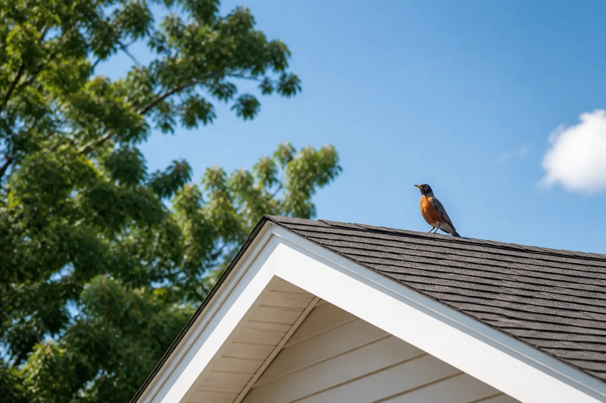
Describe what you are seeing, hearing or noticing. Wildlife Match may introduce the request to independent local providers.
Choose the situation that most closely matches what you’re noticing around the home.
Activity involving raccoons, squirrels, bats, birds or other wildlife in or around the structure.
Explore wildlife removal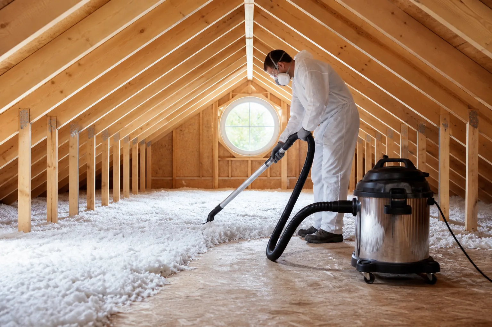
Assessment and cleanup considerations for nesting material, droppings, odor and disturbed insulation.
Explore attic services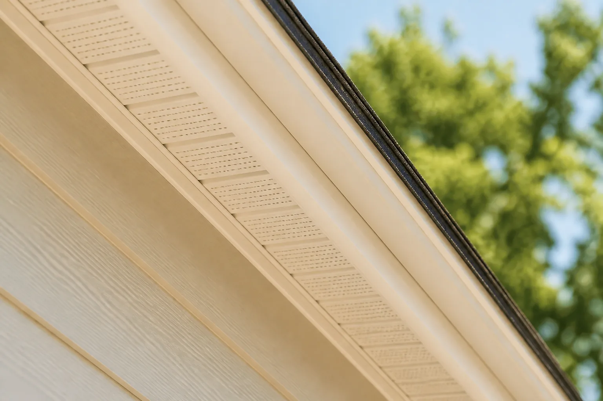
Exterior gaps, vents, soffits and other openings that may need exclusion or repair.
Explore sealing services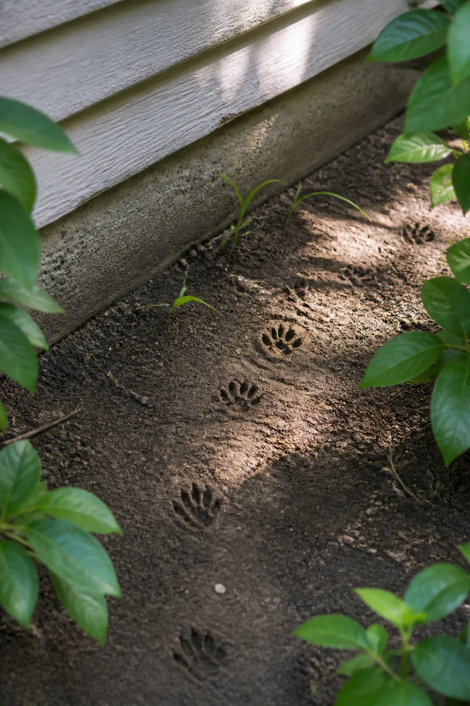
Share what you’re noticing once. Wildlife Match organizes the request and may introduce it to independent providers serving your area.
Tell us where activity is happening, what you have seen or heard, and when it began.
The details are structured so relevant independent providers can understand the starting point.
Interested providers may contact you to discuss inspection, options and next steps. Response is not guaranteed.
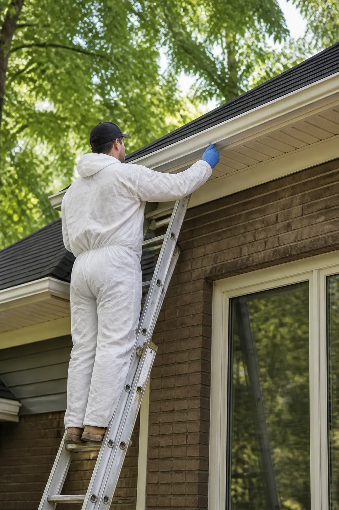
Small clues can help explain where activity may be happening. Select the description closest to your situation.
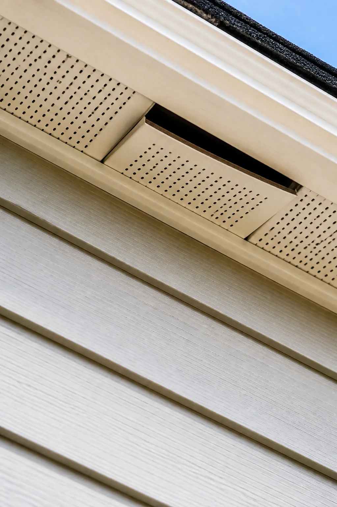
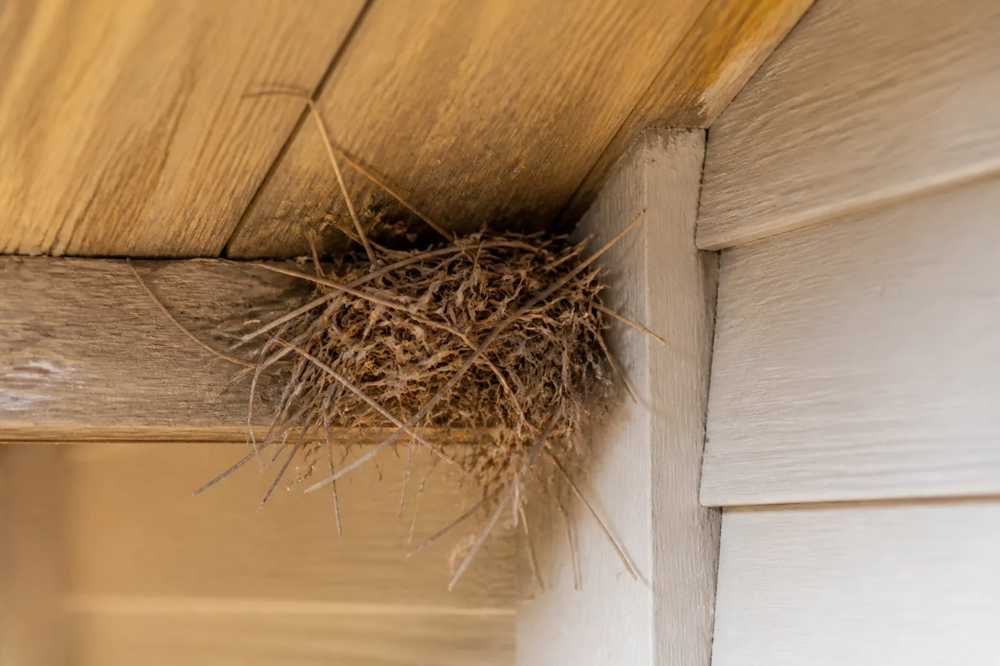
Early attention may help homeowners understand entry points, contamination concerns and repair needs while independent providers explain available options.
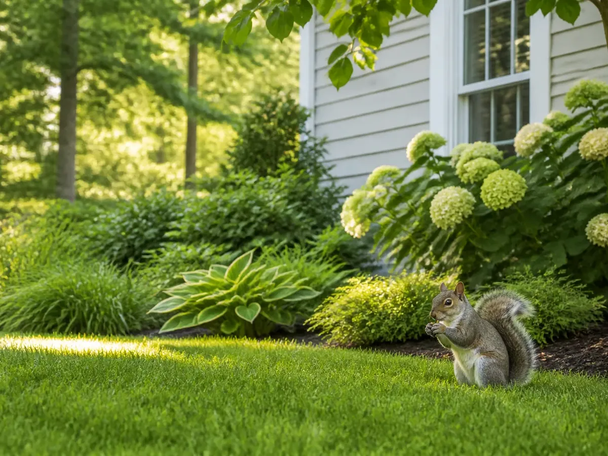
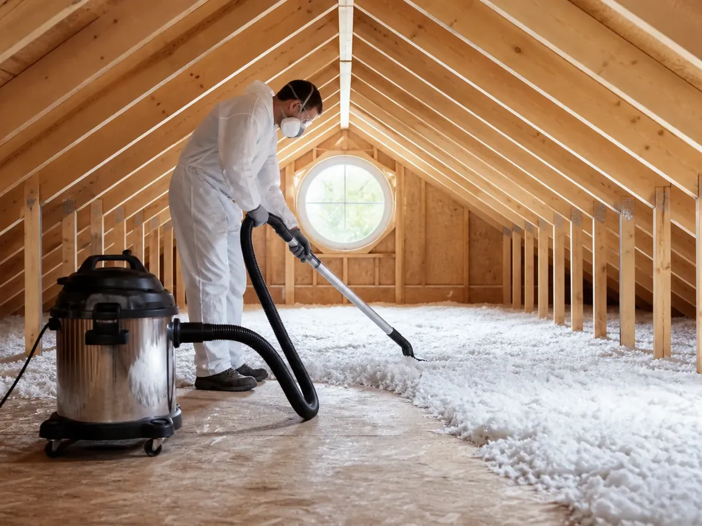
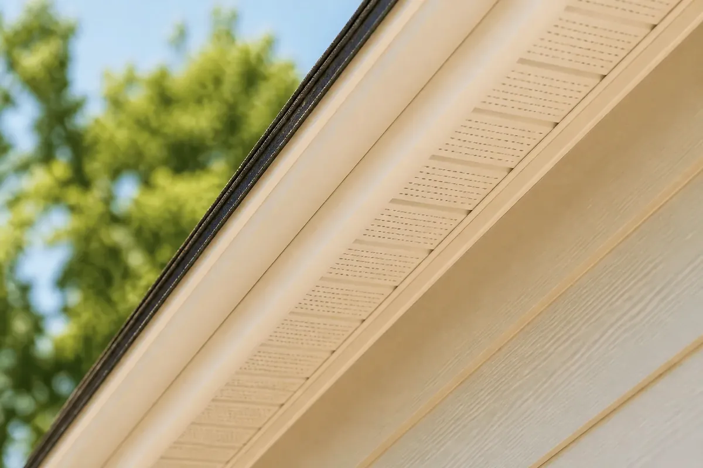
Openings and disturbed materials may allow repeated activity or weather exposure.
Droppings, nesting material and damaged insulation may require careful assessment and cleanup.
Ask providers to explain removal methods, exclusion timing and species-specific considerations.
Do not enter unsafe areas. Avoid approaching wildlife, disturbing nesting animals, climbing roofs or handling droppings without appropriate guidance and protection.
You do not need to diagnose the species. Record what you can safely observe and leave risky areas undisturbed.
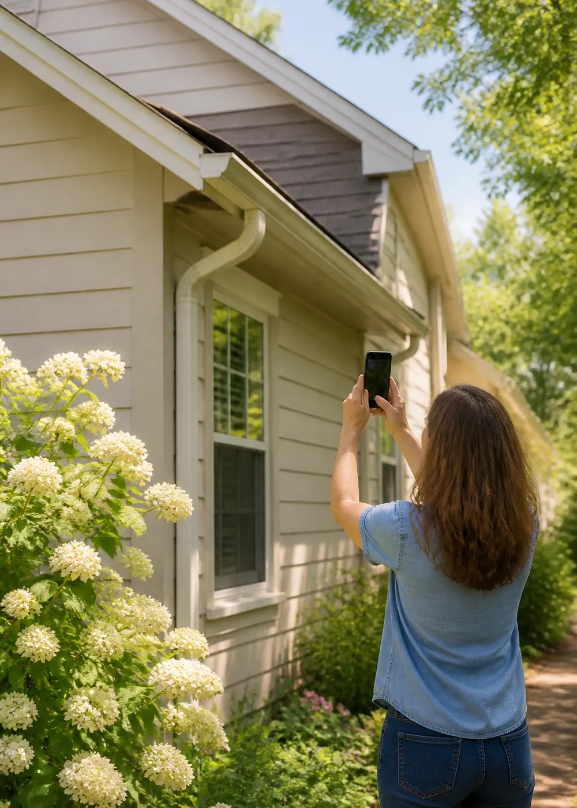
Wildlife Match is an independent referral platform. It may introduce a request to providers serving the area, but it does not perform, supervise or guarantee wildlife work.
Providers operate independently and set their own inspections, methods, pricing and availability.
Ask about licensing, insurance, species-specific rules, written scope and warranties.
Introductions depend on location, provider interest and project details.
Wildlife Match does not endorse a provider merely because an introduction or advertising relationship exists.
Useful answers
Clear expectations help homeowners have a more useful first conversation with an independent provider.